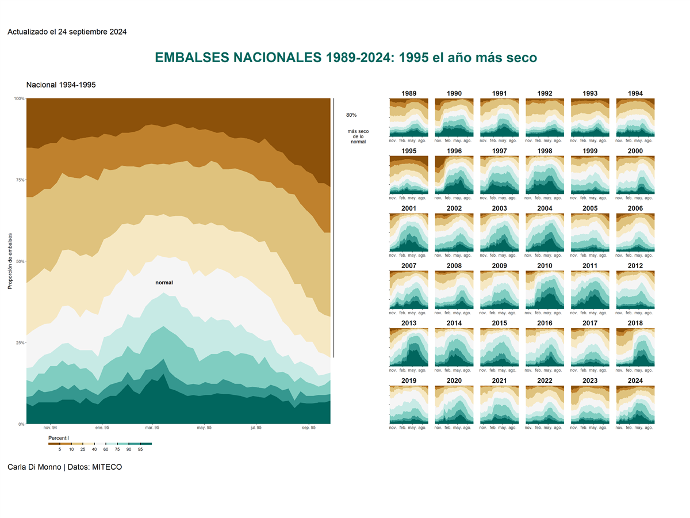
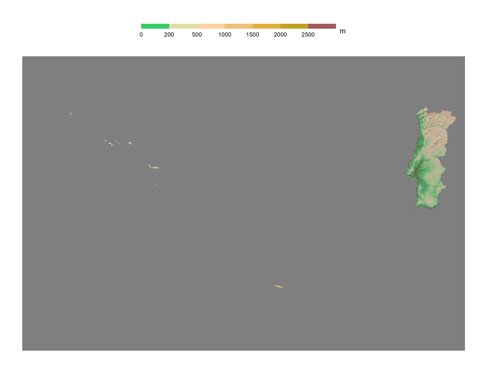

01 · Anomalías del volumen en embalses de España
Proporción de embalses por percentil de volumen a nivel nacional y por cuenca, usando el año hidrológico (oct–sep).
Ver informeDos proyectos reproducibles de hidrología, modelado del relieve y cartografía temática. Los informes son autocontenidos y pueden consultarse directamente en el navegador.

Proporción de embalses por percentil de volumen a nivel nacional y por cuenca, usando el año hidrológico (oct–sep).
Ver informe
Mapas de relieve (hillshade) de Portugal y camas hospitalarias NUTS-2 en Europa.
Ver informe